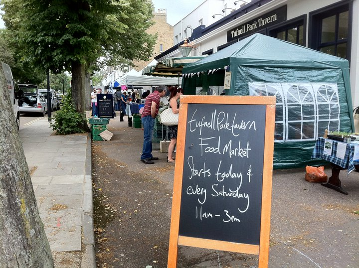

-

Film screening: The Coconut Revolution
7pm Upstairs at the Lord Palmerston
Come join us upstairs at the Palmerston to see a multi-award winning documentary about the struggle of the indigenous peoples of Bougainville Island – dubbed the “world’s first successful eco-revolution”. It’s less than an hour long so we’ll carry on afterwards with drinks and discussion to enjoy the newly refurbished Lord P!
This event has been organised jointly with the North London Energy Transition.
DATE
Monday 15th AprilTIME
7pmVENUE
Lord Palmerston, 33 Dartmouth Pk Hill, NW5 1HU -
Coming up
13 Apr: Saturday Art Class 13th April, Fabelist Art Classes Saturday Art Class 2-4pm
15 Apr: Film screening: The Coconut Revolution, 7pm Upstairs at the Lord Palmerston
Regular Events
Saturdays 11am-3pm
Tufnell Park Tavern Food Market.
Last Sunday of the month
Last Monday of the month
Green drinks at 7pm.
First Monday of the month
Steering group at 7pm.
News
Film screening: The Coconut Revolution7pm Upstairs at the Lord Palmerston
Saturday Art Class 13th AprilFabelist Art Classes Saturday Art Class 2-4pm
the greener HOME event3-9pm at the Hamsptead Old Town Hall
PASSIVHAUSJustin Bere on Passivhaus
A festival of art, science, and music inspired by water.Exhibitions, Lectures, Performances by an International Cast of Artists, Scientists and Musicians at the menier Gallery, 12-28th March Secret Garden Spring dates
Put them in your diary!
Tour de Tufnell Park 'Election Special'2-mile family friendly bike ride
MARKET THIS SATURDAYbike powered music, papers, rides and more
What is Transition?
Transition Tufnell Park (TTP) is part of the Transition Town network and is one of many Transition Towns all over the world, working together to create community, sustainability and a positive future.
What happens then?
Based on the ideas of peak oil and the importance of community, the aim is to Transition away from fossil fuels, towards a more carbon-neutral, community led and creative future. This could be anything from being part of a community garden, looking into energy, getting creative, or just having a drink with neighbours.
So who are we?
TTP is you, me, and us working together. So it is basically anyone at all who wants to get involved with community based ways of living whilst acknowledging our relationship with the world around us. All time is volunteered.
Get involved?
For starters, why not have a look at some of our projects, groups or events, and keep up to date with community updates?
If you have an idea for an event, an old time hobby that you want to share or a project to start, we want to offer support and links to others with similar ideas.
We also want to connect up local activity so please let us know if there’s something local you want publicised, or of anything we haven’t linked with yet.
There are no set rules and that’s why every Transition Town is different – it is whatever we make it and the more people involved, the more we can do together.
-
Latest photos

-
Join the ENERGY CHALLENGE
- (or local news)
- North London Energy Transition
- Transition Network
- Photo gallery
- TTP do the Big Dig
- TTP on Project Dirt
- Kentish Town
- Dartmouth Park
- Finsbury Park
- Highbury
- Stoke Newington
- Crouch End
- Highgate
- Hackney
- Belsize
- Primrose Hill
- And more...
- St George's public art trail
- Fabelist Art Classes
- Books for Free
- Tufnell Park Cycles to School
- Tufnell Park Parents Support Group
- Friends of Tufnell Park Playing Fields
- Whittington Park Community Assoc.
- Gatcombe Road
- St Georges Avenue
- Streetbank
- Better Archway Forum
- Highgate Climate Action
- Guerilla gardening
- Landshare